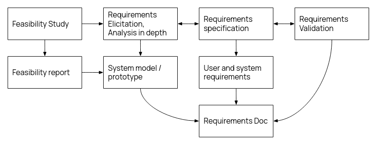
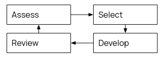
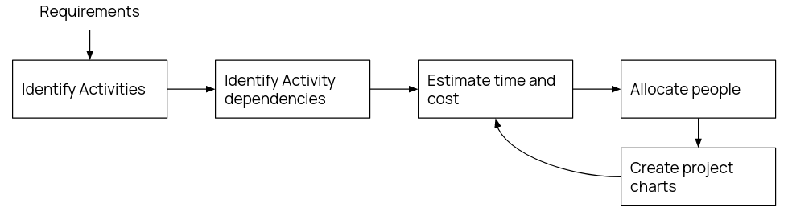

All processes involve some sort of specification, design and implementation, testing, and evolution (maintaining)
Two main types of development: plan driven and agile
Plan driven: everything is planned and fixed in advance. Inflexible.
Agile: Incremental planning, more adaptable to change.
Plan-Driven
Waterfall Model
Invented in 1970, strictest of all plan driven models.
If a change is required, the waterfall model must restart. Incredibly inflexible and in practice not completely followed.
Requirements: most customer focused, involves identification of resources, distribution of work.
Design: design document generated, should be really detailed so implementation is not hard.
Implementation: only when design doc is finished. Everything written should be unit tested.
Verification/Integration: Most group focused - putting all parts of system together, making sure they work.
Maintenance: Hand over program and documentation. Offer maintenance, which is also done via waterfall.
Waterfall is good when requirements are understood and will not change. Few constraints on location and teams size (development distributed and isolated) and each component can be first tested in isolation.
Waterfall is not good as the client has to wait a long time for results, and changes are difficult to accommodate, and there is a problem of software tech deprecation over the entire years-long development timespan.
Inremental Development
A more flexible system than waterfall.
Each iteration is still planned like waterfall, spec updated between iterations (not rewritten).
(+) cost of accomodating change much reduced, and user gets software quicker, feedback is easier to get -- better (perceived) value for money
(+) user inclustion in acceptance testing, can even install system before the final version.
(-) very difficult to estimate overall cost of development of such a system.
(-) difficult to maintain consistency between versions - poor design choices early on hamper later feature additions. Spaghetti code.
Reuse-Oriented Sofware Engineering
Why reinvent the wheel? Instead, many devs rely on "off-the-shelf" / open source premade components, and just writes the glue code to tack them together. Common off the shelf (COTS) systems.
Compromises on features with client has to be made, but tradeoff is that program is banged out in record time.
Software Spec
To understand and define what services are required
To identify limits in feasibility - "requirements engineering", producing requirements document.

Agile
Agile development is about rapid development: interleave spec, design, and implementation, and develop the system as a series of evolving prototypes.
Focus on code over design, develop as you go. Aim for speed, and flexibility.
Often has the short stand up meeting concept.
Major principles of Agile are
Customer involvement - cannot respond rapidly to changes without rapid feedback
Incremental delivery - have prototypes, and update spec for next iterations
People not process - have highly skilled coders that know what they're doing. Share knowledge and improve processes
Embrace change - open to additions, and design system to accommodate change (hard)
Maintain simplicity - since there is a lack of good doucmentation, software must be simple and easy to understand for new members - "self commenting code" (lofty ideals)
Most companies spend more money on miantenance than actual development. Since agile prioritised development over documentation, this can be difficult to pick up and maintain later on.
Very flexible to requirements changes provided it's the original team doing it. Team losses hit harder in agile.
It is possible to mix plan-based and agile and pick and choose.
Extreme Programming
Incremental delivery with fast iterations. Automated tests to verify builds.
Code refactored constantly to maintain simplicity. Strong customer involvement, deliveries every few weeks.
Impractical if customer slow or hard to reach.
Incremental planning: requirements on "story cards", which are selected for inclusion based on priority.
Small releases: minimum functionality for release, with more stuff for future releases.
Simple design: only enough design to meet customer requirements, maintaining expandability - this is HARD
Test-driven development: write the tests for the feature before writing the feature to match the tests.
Refactoring: constantly refactor to improve code
Pair programming: work in pairs, one coding and the other checking and providing support. regularly swap.
Collective ownership: more than 2 people responsible for any one part of the codebase.
Continuous integration: integrate as soon as feature done
But also Sustainiable pace: avoid large amounts of overtime and overwork.
Onsite customer: have a customer rep on site for minimal response delay.
Extreme programming is very agile, but has the drawbacks of it too. Best suited for small, experienced teams.
Scrum
General method focused on iterative process, with three stages
Planning stage - general goals
Sprint cycle - each cycle is an implementation, 2-4 weeks but it varies
Project closure
There are daily meetings for progress.
Select the features needed with the customer, but build in isolation. The scrum master (i.e. team leader) interfaces between team and customer
Work is reviewed and presented at end of sprint cycle.
Requirements Analysis
Requirements are descriptions of what program should and shouldn't do. This enables devs to fulfil customer needs, and provides a basis for tests, requirements, and analysis.
2 parts: what is going to be built, and how is it going to be built.
Requirements bridge customer & developer, should be customer understandable, or at least
Have two requiremetns docs, a "C-facing" (customer facing) and a "D-facing" (dev facing), with differing amounts of technical detail. C-facing is usually written first. Crucially, there are no differences in requirements between the two.
Requirements should be specific and measureable. Not vague. Be aware of changing requirements.
C-facing reqs
D-facing reqs
System from user view
how it works in natural language
diagrams are always nice
list of constraints in operation
Detailed descriptions of functionality
Language, service, protocols, libraries, etc
Defines exactly waht must be implemented
The whole req doc must be: prioritised, consistent, modifiable, traceable (i.e. know where req came from, justification)
Each requirement must be: correct, feasible, necessary, unambiguous, verifiable
The MoSCoW order of priority is often used: Must, Should, Could, Won't, but there is an argument that if a requirement is "Won't", don't put it there in the first place?
Requirements elicitation requires interaction with stakeholders, and gather information about the project. Think through the conficts of interest. Then, get clarifications, go through 'em with a fine-toothed comb, and finally write down the document after finalising.
Team Organisation
The project manager makes sure everything is running smoothly and on time.
They are arguably the most stressful role, and is often the least technical and most people-oriented role.
They must track progress and help solve stuck situations, plan the project development.
They must manage the team, chase people up about work, etc.
And consider risks (to development or to team) and mitigations -- risk assessments. Considering when to sacrifice features if necessary.
The business analyst looks at organisational context of the project.
They identify stakeholders, activities, processes, etc
And understand the stakeholders' requirements. They do the requirements elicitation and documentation. Make sure everything is traceable and justified.
These guys must also: Review the test plan -- a good test plan can identify mistakes even before development, such as incompatibilities between modules. Bugs and defects should be triaged and prioritised.
Supervise project installation, deal with the "day 1 live trauma", and hand over software, and perhaps manage maintenance and support.
Reflect over what did well, what did poorly when closing down project. Archive and seal documentation.
Reward and recognise people for their achievements.
Throughout, accountability for code is important. Use version control, git blame exists for a reason. Git is good.
Very few projects succeed, why is this so? Well, there are a multitude of reasons, amongst them poor planning, requirements changing too much, high turnover, unrealistic deadlines, poor testing, and so on and so forth.
Project management is essential to making sure constraints are kept, to
Deliver software on time
Keep costs within budget
Deliver software that meets expectations
Maintain morale and productivity of team
Team success depends on three generic factors:
People: a mix of people with different motivations and skillsets
Organisation: individuals must be given opportunity to contribute
Communication: technical and managerial communication is essential
And four people factors:
Consistency: not making people feel undervalued
Respect: everyone has equal opportunity to contribute
Inclusion: all views should be considered (regardless of heirarchy)
Honesty: faking it will backfire unless you actually make it
People are motivated through satisfaction of their needs (something something heirarchy of needs).
Heirarchy is still important. Should the PM be the Tech lead? Or should it be someone else? Who will interact with stakeholders? How do we integrate people who are not in the same location? How can knowledge be shared?
Group organisation can be informal or heirarchical:
Informal: No strict heirarchy, decisions made by consensus. Can be successful if griup is highly competent.
Heirarchical: Defined leaders and management levels. Can work well in breaking down and delegating subproblems. Best when responsibilities are clear.
A cohesive team can establish their own quality standards, and actually follow them. Individuals will learn from and support each other, and people tend to work better.
Risk Management
Identification
Risks can be grouped into what areas they affect. Project risks affect the schedule or resources of the entire project. Product risks affect the final quality of the product. Business risks affect the organisation. Some risks can fall into multiple categories.
Project Risks include staff turnover, management change, hardware unavailability, requirements change, etc.
Prduct Risks include tool/library underperformance, the aforementioned requirements change, specification delays, size/complexity underestimates, etc.
Business Risks include technology changes and deprecation, product competition, etc.
There can be even finer category groups: such as Technology Risks, People Risks, Organisational Risks, Tool Risks, Requirements Risks and Estimation Risks.
Analysis
Consider each risk and its severity, this can then be grouped and prioritised
For example, you could have a rating Insignificant/Tolerable/Serious/Catastrophic.
Contingency
Once you have a prioritised risk list, a contingency plan for each risk must be made. First is avoidance: aim to reduce the chance of the risk even becoming reality, then comes minimisation: reducing damage if it goes wrong, and finally contingency plans: what to do if risk does occur.
This all goes into a risk assessment / risk register, which can be a docuemnt, or on a management platform, but somewhere accessible to management.
Project Management
The planning documents of a project should communicate all ideas, contingencies, organisation, etc to both the developers and the stakeholder.
Planning has three stages: (1) Proposal / pitch / bidding phase, (2) startup phase, and (3) periodic planning.

Scheduling is done through Gantt Charts, and critical path analysis algorithms for scheduing which tasks go first.
Estimation of costs and schedule however is really very easier said than done,
It often comes down to experience as to how to schedule a project correctly,
Or using some sort of algorithm to guesstimate the schedule.
Success is measured against how well the project meets the spec and existing expectations.